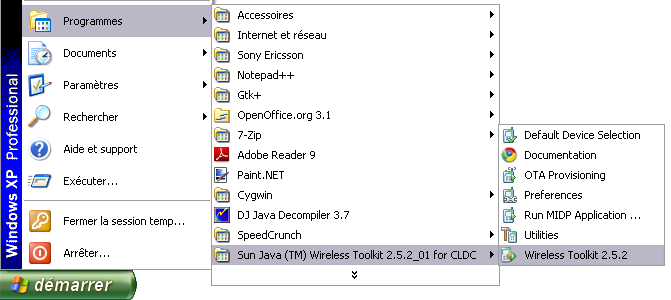
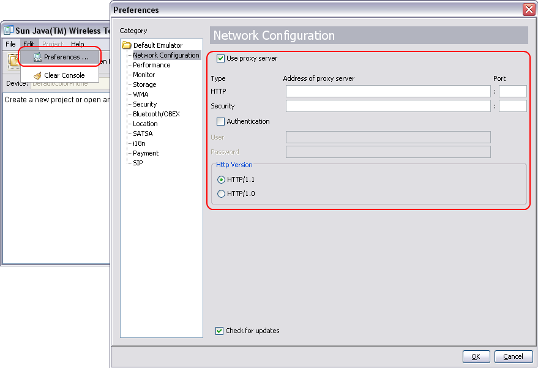

Sun Java Wireless Toolkit is accessible on the Sun web site.
URL: http://java.sun.com/javame/downloads/index.jsp
Download the Sun Java Wireless Toolkit 2.5.2 for CLDC.
Launch the downloaded file (on Windows: sun_java_wireless_toolkit-2.5.2_01-win.exe).
Use the default installation.
Open the Wireless ToolKit.

Open preferences (Edit -> Preferences...)
Enter proxy configuration and valid.

Via the MS Windows Start menu, launch Run MIDP Application...
shortcut (Programs > Sun Java (TM) Wireless Toolkit 2.5.2_01 for CLDC >
Run MIDP Application...).
Select your widget JAD file and launch it.
Emulator is launched and we can use the widget.
Open console.
Move to toolkit folder (Windows command: cd C:\WTK2.5.2_01\bin).
Use emulator application to launch widget (Windows command:
emulator -Xdescriptor:<MyWidget>.jad).
Example to launch toolkit 3D Demo:
emulator -Xdescriptor:C:\WTK2.5.2_01\apps\Demo3D\bin\Demo3D.jad.
All widgets can be configure independently.
On Eclipse, open app.properties file on root folder for a widget project
(/MyWidget/app.properties).
Add following lines (change yourAccount by your Windows account):
Launch Widget: The Sun WTK emulator is launched.